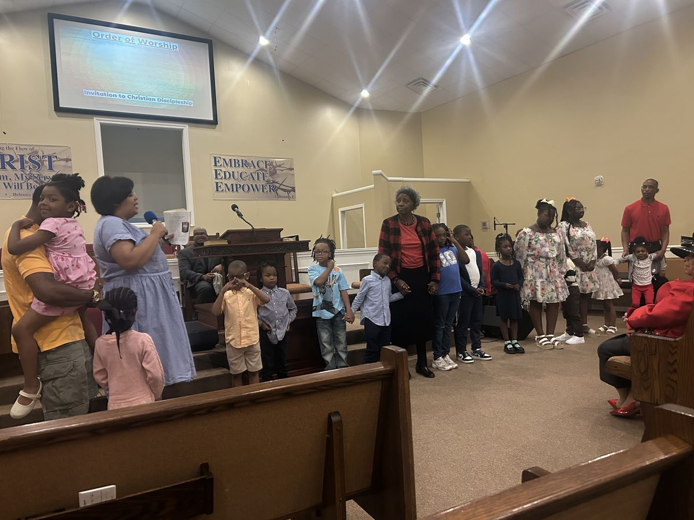
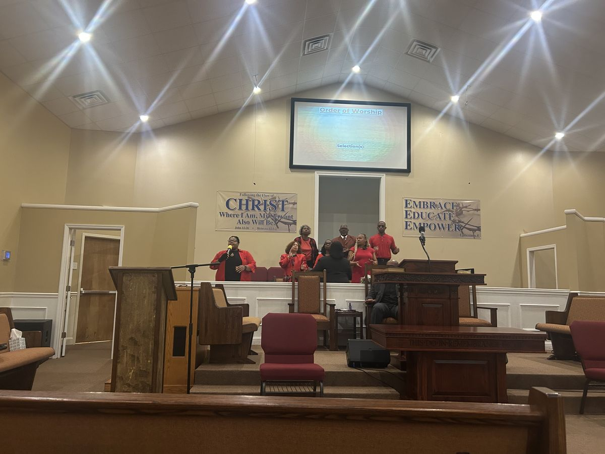
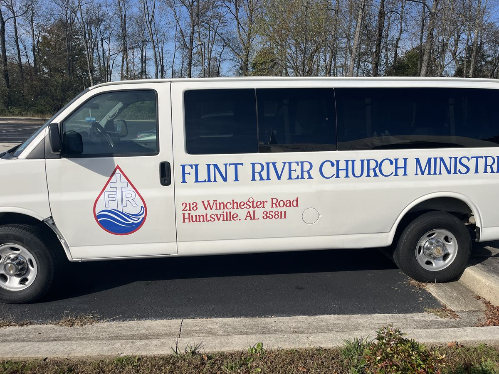

There's a place for you at Flint River.
Flint River is a church family leading people to Christ for Deliverance, Discipleship, and making a Difference. Come as you are. We'll save you a seat.
A safe haven for people from all walks of life
Whether you grew up in church or you're walking in for the first time, Flint River is a community-centered church. Everything we do comes down to three words.
Come as you are and you'll be met with a warm welcome. Our Welcome and Usher ministries are here to make your first Sunday easy.
Sunday School classes for men, women, young adults, and youth, plus Wednesday Bible study, so you can grow in the Word at your own pace.
From the STEAM Summer Camp to the Pantry and We Care ministries, faith here turns into service to Huntsville.
Elder Gregory M. Miller
Pastor Miller answered the call to Flint River in May 2019. A Selma native with a mathematics degree from Alabama A&M, he works at NASA and holds a Master of Arts in Pastoral Ministries from Liberty University.
He and his wife of over ten years, Tabitha, call Huntsville home. Under his leadership, Flint River and Keilah P.B. Church united as one congregation in 2022. It was a new chapter for a church that has been writing chapters since 1808.
Read Pastor Miller's storyKnow what to expect before you walk in
Visiting a new church can feel like a big step. Here's how a Sunday morning at Flint River goes, so nothing catches you off guard.
Park and come on in
Our Welcome Ministry and ushers will meet you at the door, help you find a seat, and answer any questions.
Sunday School (optional)
Small classes for men, women, young adults, and youth. Come early, or just come for worship.
Morning Worship
Prayer, choir, and preaching from the Word of God. Youth lead worship every 3rd Sunday.
More than two centuries of following the flow of Christ
Flint River was constituted in 1808 by Elder John Nicholson in the home of James Deaton in Killingsworth Cove. Its first meeting house went up on the bank of the Flint River in 1809.
Through generations of pastors, several buildings, and the 2022 union with Keilah P.B. Church, the mission hasn't changed: lead people to Christ.
Explore our historyThere's a place to serve and belong

Youth & Children
Youth Sunday School, Children's Church on 3rd Sundays, and a STEAM Summer Camp every July.

Music & Arts
Lift your voice in the choir, or use your gifts in the Arts, AV, and Multimedia ministries.

Care & Outreach
The Pantry, We Care, and Transportation ministries meet real needs in our church and our city.
Mark your calendar
Special Sundays are a great time to visit for the first time, especially Family & Friends Day and Homecoming.
Full church calendarWorship with us from anywhere
Sunday Worship on YouTube
Watch live every Sunday at 10:30 a.m. CT, or catch up on past sermons anytime.
Watch on YouTubeMidweek Recharge on Zoom
Wednesdays: unified praise & prayer at 6:00 p.m., Bible study 6:30–7:30 p.m. CT. Meeting ID 256 776 9688.
Join on ZoomWe'd love to meet you this Sunday.
Let us know you're coming and we'll have someone ready to welcome you.